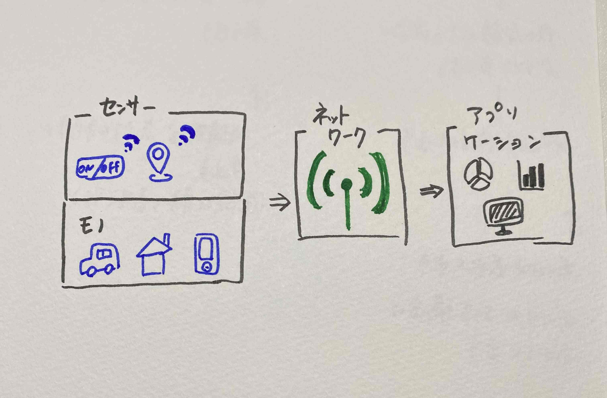
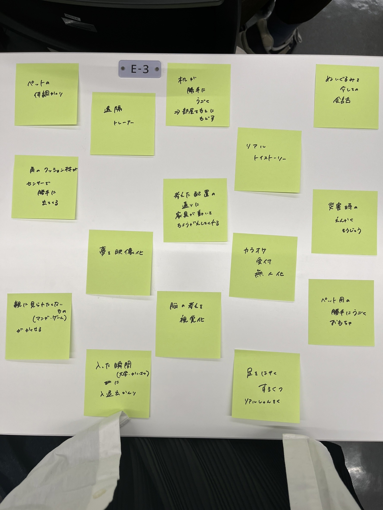

IoTに関して
＜IoTとは＞
IoT「Internet of Things」（モノのインターネット）
・「モノ」をインターネットに接続することで、離れた場所から対象物を計測・制御して、モノ同士の通信を可能にする技術
＜仕組み＞
・入手した情報をインターネットを介して人やモノに伝送する

IoT（Internet of Things）とは？わかりやすく解説！
・「モノ」に「センサー」をつけデータを読み取り、「ネットワーク」で「アプリケーション」にデータを送り可視化する
IoTでできることとして、
モノの操作（ex:エアコンの操作、ドアの開閉）
モノの状態を知る（ex:ペットの健康状態の可視化）
モノの動きを検知する（ex:運行状況を把握）
モノ同士で通信する（ex:スマートホーム）
参考＞
IoTとは？意味や仕組み、活用事例をわかりやすく解説
＜IoT実験動画＞
グループワーク

＜アイデアスケッチ＞